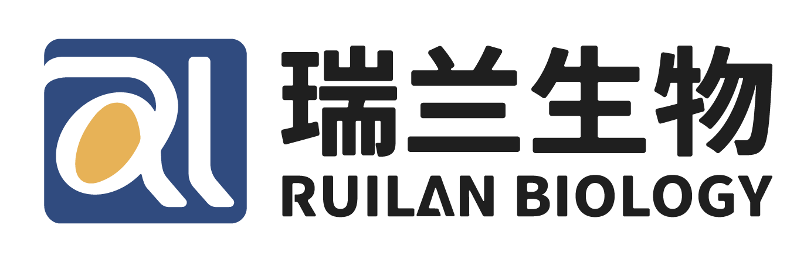
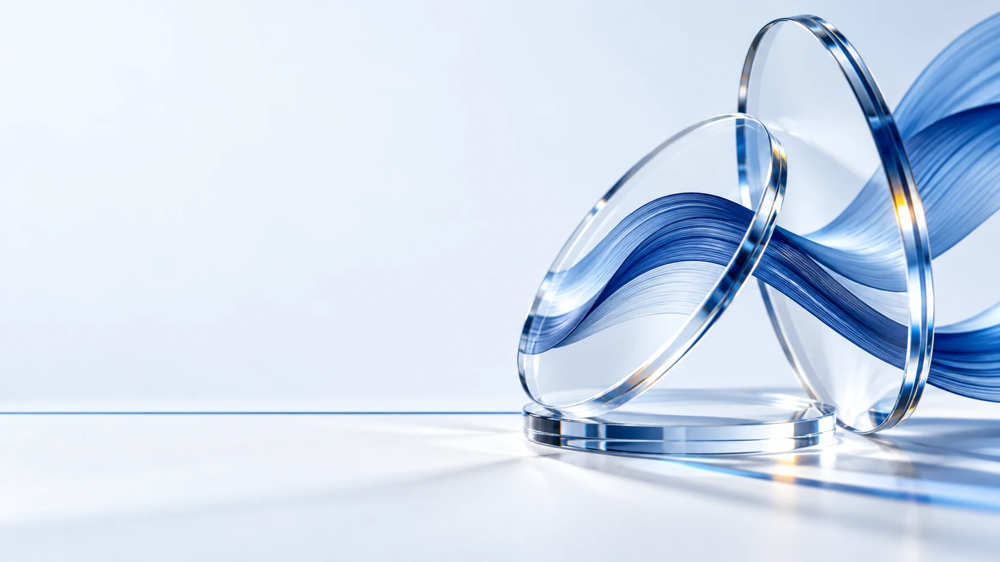
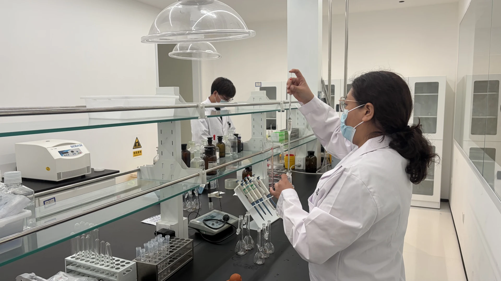
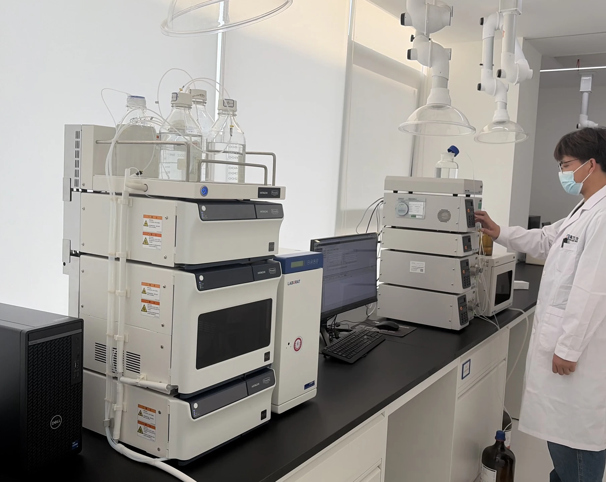
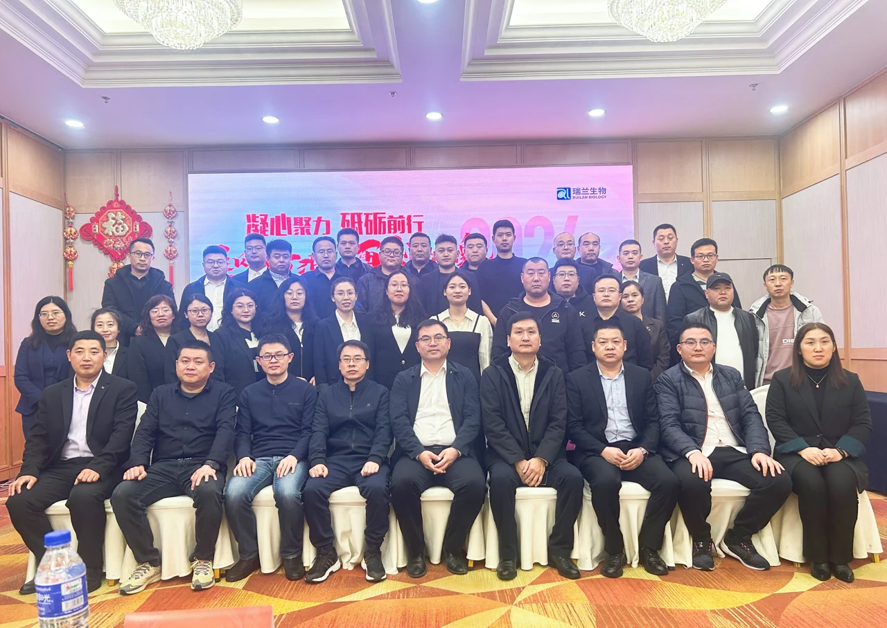
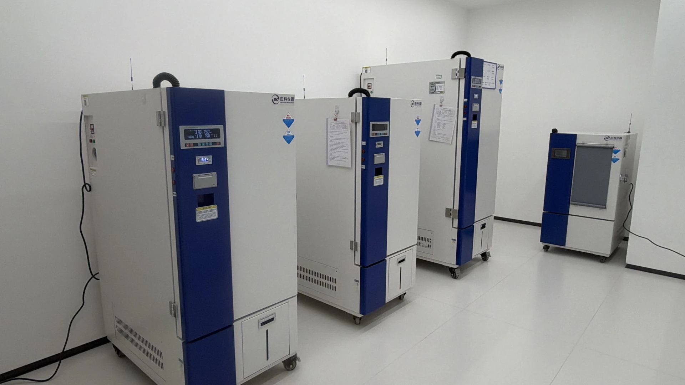
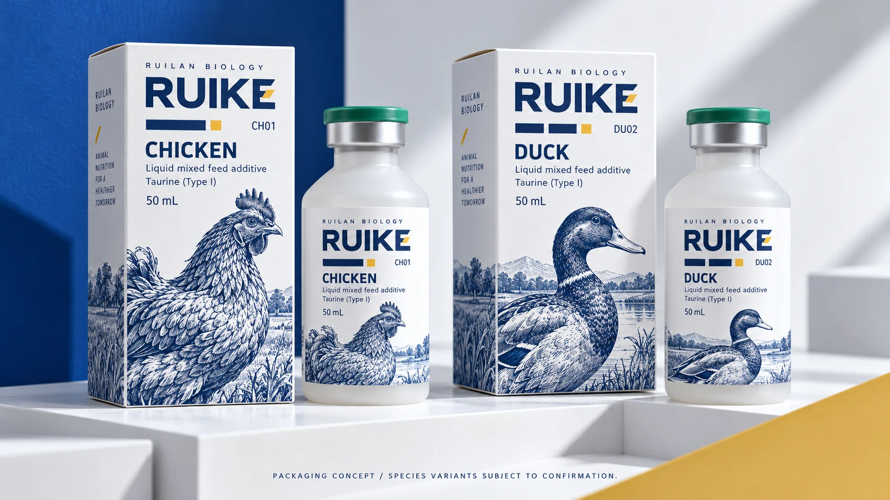

规划影像 / 12秒 / 无声
园区规划的空间一瞥
企业提供的建筑三维漫游片段，非园区实拍。建成状态需企业确认。


科学品牌概念视觉
01 / COMPANY
河北瑞兰生物科技有限公司位于河北正定，围绕动物健康与未来食品开展业务，持续建设技术研发、产品转化与质量管理能力。
让企业介绍有具体的现场，让合作沟通有清楚的资料。


RESEARCH IN PRACTICE构建与筛选表达体系
研究工艺与过程控制
分离、检测与评价
FIVE RESEARCH PLATFORMS
BUSINESS & PEOPLE
企业介绍以动物健康为重要业务，并提出未来食品方向，关注营养与生命科学相关研究。具体产品及合作项目，按企业核准的资料逐项展开。
研发团队材料介绍了动物重组免疫蛋白、中药创新、功能配料、产品研发与产业化等专业背景。公司与高校合作、团队职务和成果清单，正式发布前确认现行版本。

企业提供的团队活动照片。平台与业务介绍依据公司PPT整理。
02 / RESEARCH PLATFORM
从目标设计，到检测与稳定性研究。用四个阶段，展开瑞兰介绍的技术平台。
技术平台示意，并非真实分子结构。具体工艺按产品资料确认。
01 / 04
设计目标序列，构建并筛选表达体系。
03 / QUALITY & MANUFACTURING

围绕样品管理、质量检测、数据记录与合规资料，清楚呈现企业的质量管理工作。
04 / PRODUCT IDENTITY
瑞克以真实 50 mL 瓶型为基础，探索鸡类与鸭类的系列包装，让产品识别与信息阅读形成统一秩序。
系列包装为概念设计，物种版本及适用资料待企业确认。RUIKE 暂为工作译名。

CHICKEN
DUCK
统一系统，预留更多物种的设计延展。未来产品以核准资料为准。
05 / INSIDE RUILAN
现场影像、企业资料与产品基础信息，帮助合作方找到下一次对话的起点。
企业提供的建筑三维漫游片段，非园区实拍。建成状态需企业确认。
06 / PARTNERSHIP
告诉我们您的公司、所在国家与合作需求。让后续交流围绕明确的产品与资料展开。
联系方式依据企业现有标签整理，正式发布前由企业核准。